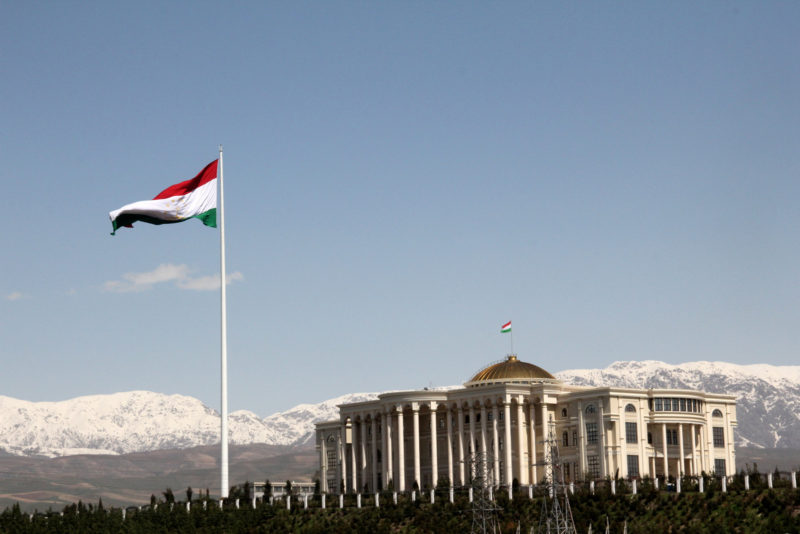

Tajikistan
The Republic of Tajikistan is located in the south-east of Central Asia.
The total territory is 143.1 thousand square kilometres. The population is 7,510,800 people (as of October 1, 2009).
The capital is Dushanbe. The currency unit is somoni, introduced in October 2000
